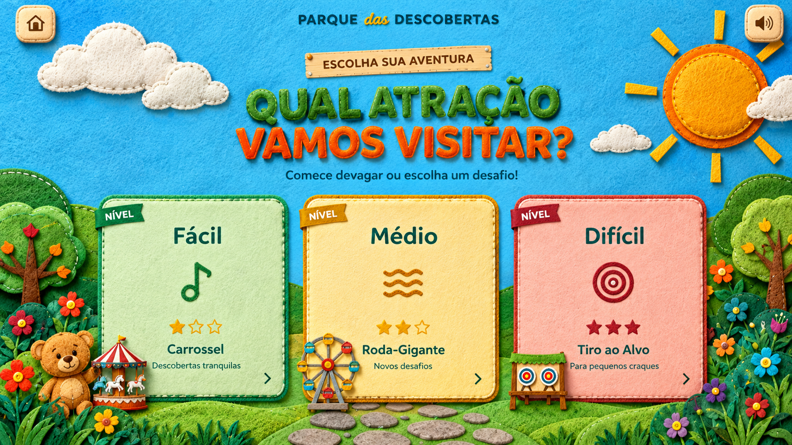

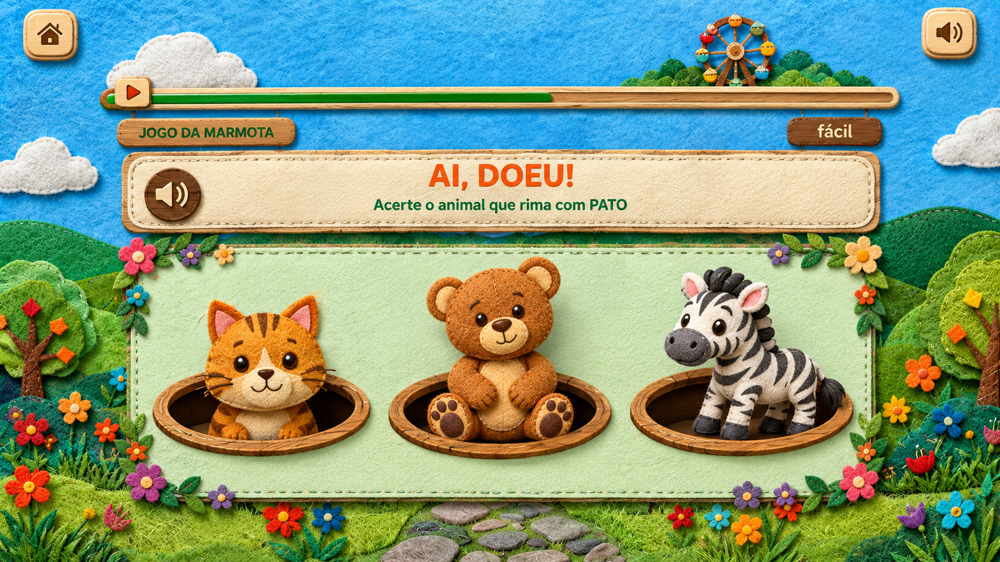
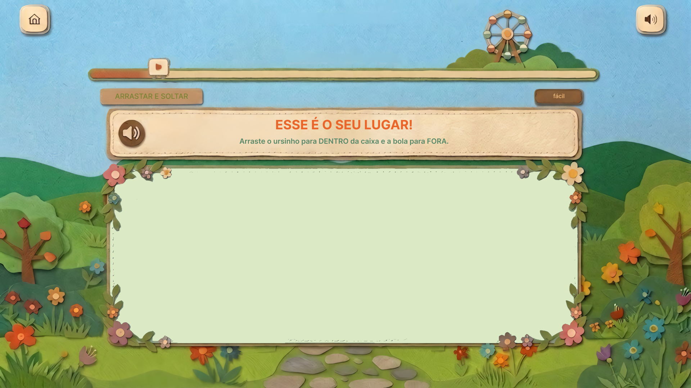
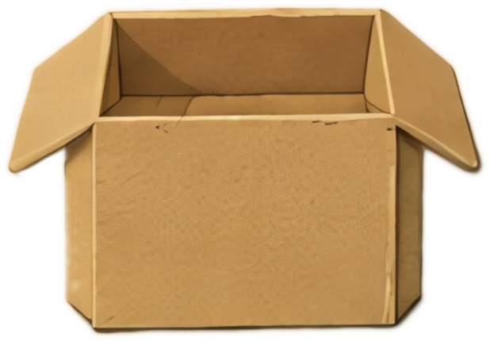
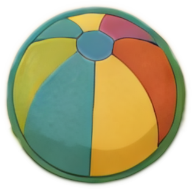
?
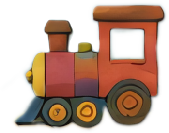
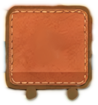
🔴 🟡 🔴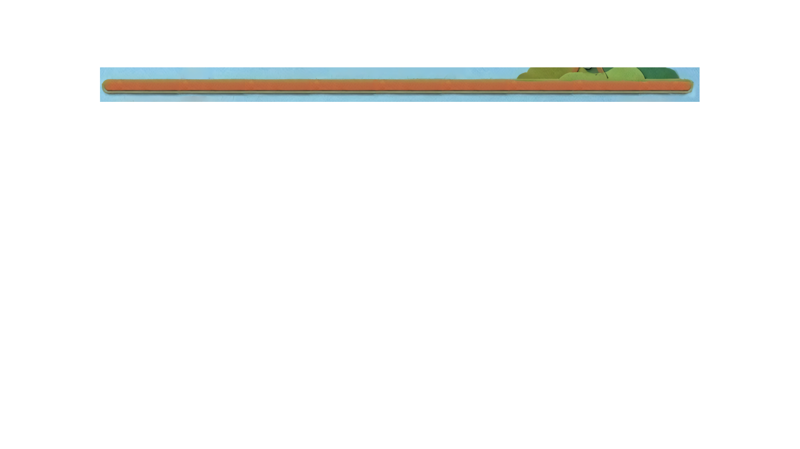
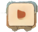
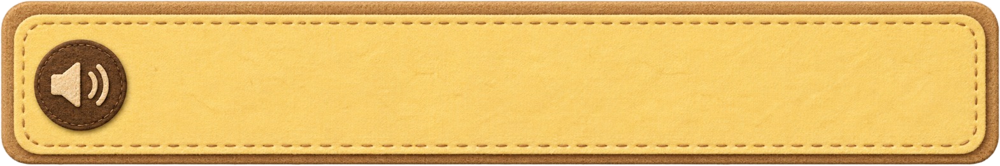
RASPADINHA/REVELAR fácilEU GANHEI ALGO?
Raspe a tela para revelar um animal de pelo macio
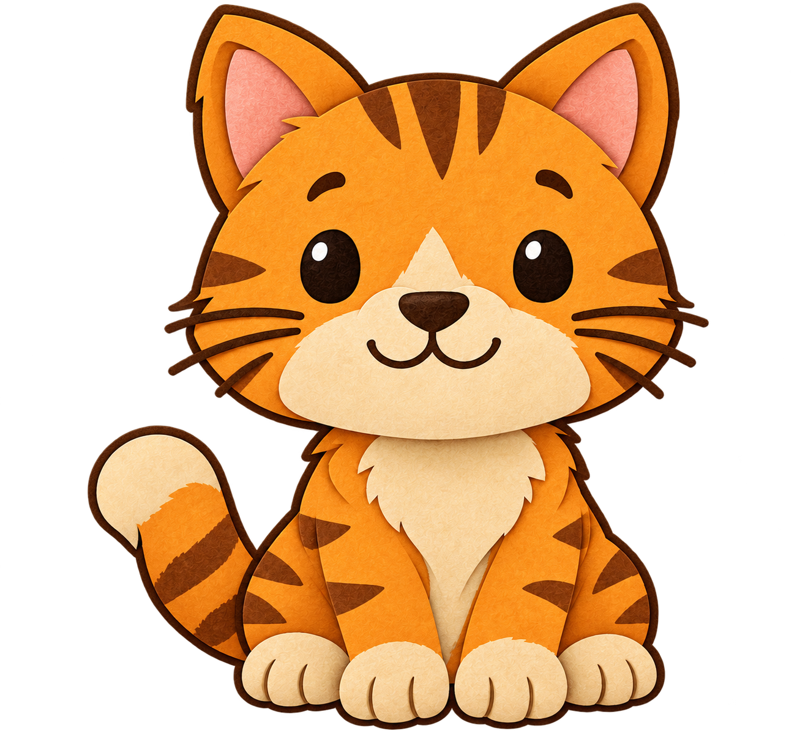
SÍ-LA-BAS
Quantas sílabas tem a palavra PA-TO?
ONDE ESTOU?
Guie o coelhinho até a cenoura.
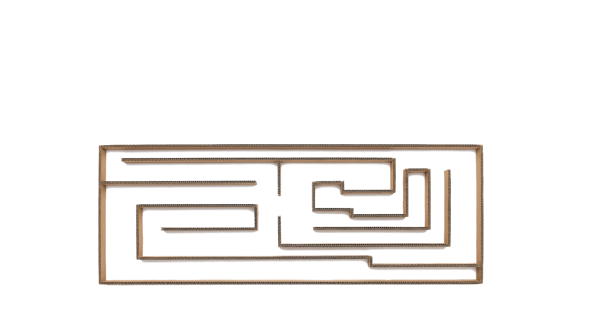
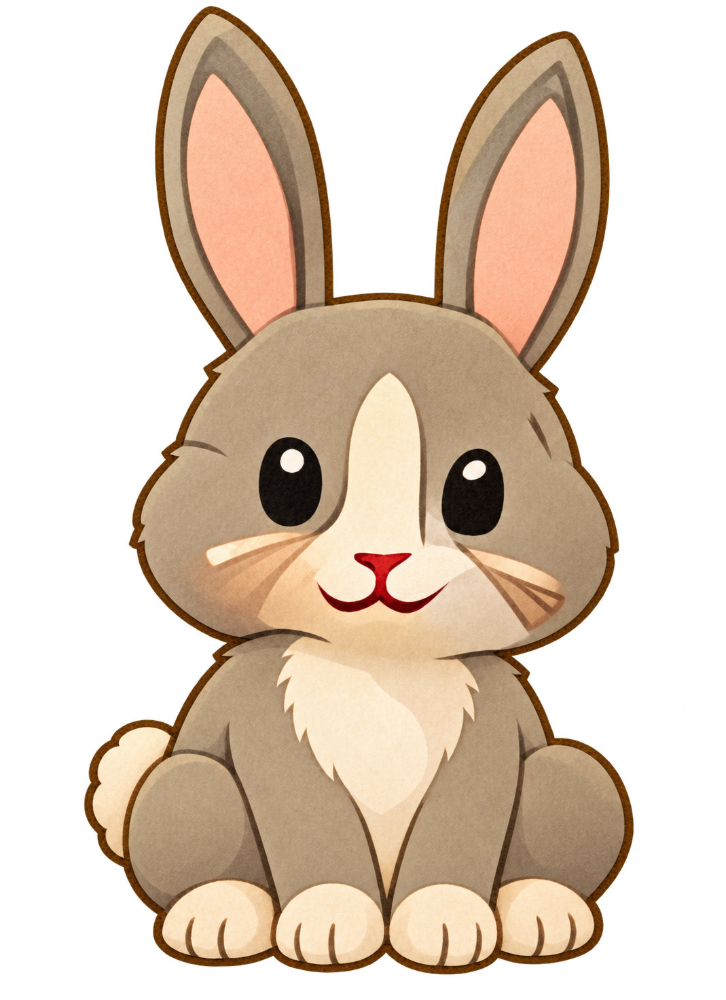
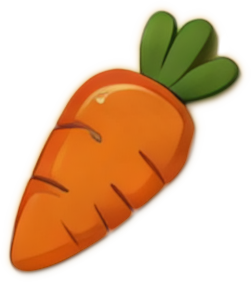
ALIMENTE O URSO TOBI
Dê ao Tobi uma fruta VERMELHA
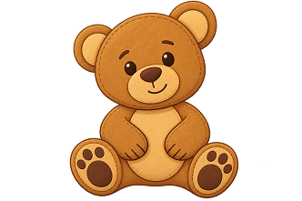
PLOP!
Estoure a bolha com número 3
MAIS NÍVEIS ESTÃO POR VIR
O visual e estilo dos minigames ainda estão sendo construídos.